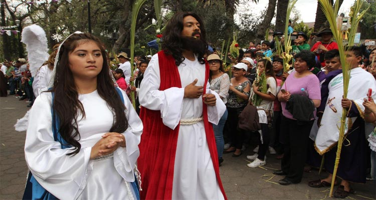
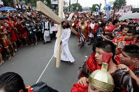
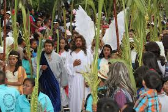

SEMANA SANTA EN IZTAPALAPA LA MÁS GRANDE DEMOSTRACION DE AMOR Y FE!
Iztapalapa, pueblo prehispánico, milenario con arraigo en sus tradiciones y con un linaje que hace una comunidad con orgullo, desde nuestros ancestros hasta el presente, siempre un pueblo rico en cultura y en una tradición religiosa desde la ceremonia del fuego nuevo hasta el presente con la Representación de la Vida, Pasión, Muerte, Resurrección y Ascensión de Cristo.

Es la semana santa la que desde 1843 motiva el interés y la participación de sus habitantes siendo esta tradición una expresión de fe y que defiende su cultura, tradiciones y acervo religioso a través de los siglos.

Año con año niños, jóvenes, adultos y ancianos de los 8 barrios tradicionalistas: San Lucas, Santa Bárbara, San Ignacio, San pablo, San José, San Pedro, La Asunción y San Miguel salen a las calles motivados por la fe a compartir con el mundo la representación de Semana Santa en Iztapalapa transformando sus calles, jardines y templos en el escenario idóneo para representar el suceso que cambio la historia de la Humanidad conjugando así un abanico de motivaciones y sentimientos humanos llevando consigo el valor de una tradición..

Año con año niños, jóvenes, adultos y ancianos de los 8 barrios tradicionalistas: San Lucas, Santa Bárbara, San Ignacio, San pablo, San José, San Pedro, La Asunción y San Miguel salen a las calles motivados por la fe a compartir con el mundo la representación de Semana Santa en Iztapalapa transformando sus calles, jardines y templos en el escenario idóneo para representar el suceso que cambio la historia de la Humanidad conjugando así un abanico de motivaciones y sentimientos humanos llevando consigo el valor de una tradición.
Aplicacion Dos, Mariana Arantza Suarez Vazquez